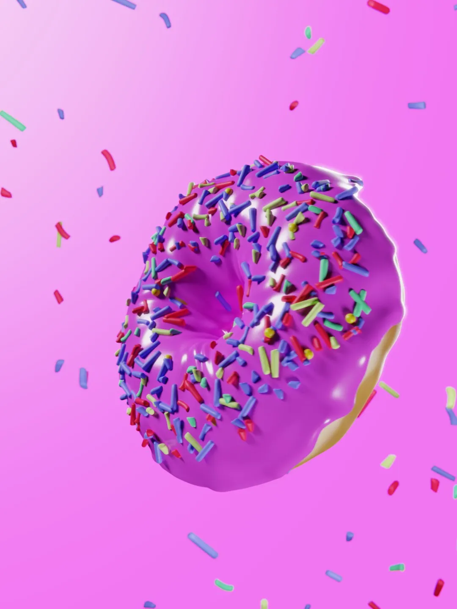

00:00:02:00Commercial · 3D / Marketing content
PieLand Bakery
A donut turned runway model — a 3D concept for the bakery Pieland, where fashion meets food.
- Category
- 3D / Marketing content
- Year
- 2023
- Tools
- Blender
As a lover of sweet treats, I was inspired to create a concept for the vibrant and playful bakery, Pieland. I decided to focus on one of their most beloved products — the donut!
I wanted to create a modern concept that highlighted the intersection of fashion and food. The classic donut was the perfect inspiration, but I decided to turn it into a beautiful and delicious model. I used the icing as a dress and added other elements to make it look like a runway model. I loved working on this project because I enjoy finding creative ways to connect different ideas and concepts, and I believe that using visuals is a powerful way to do that. It was a fun and engaging challenge to bring the donut to life in a unique and visually striking way.
Using Blender, I created a colorful and whimsical 3D model of a donut that perfectly encapsulated the spirit of Pieland. I then animated the model to showcase its intricate details and mouthwatering appeal. In this project, I sought to capture the essence of Pieland’s brand and highlight their commitment to creating delicious and visually stunning baked goods.
Through a series of frames and an original video, I hope to transport viewers into the world of Pieland and leave them craving a sweet and satisfying treat.

Next in CommercialBrand & photo campaign
EIGHT →